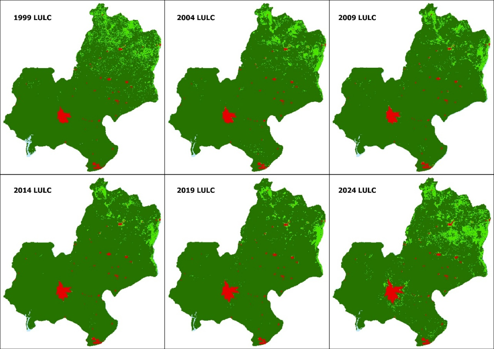

I'm a GIS master's student building a working record of spatial analysis, remote sensing, and cartography projects — from coursework to independent studies. Every project here is real work, with the data and methods behind it.
Software and methods used across the projects in this portfolio.
The most recently added piece of work. See the full project archive for everything else.

25 years of Landsat classification, Markov transition modelling, and landscape metrics explaining how — and why — Edo State's forest, farmland, and cities have reshuffled.